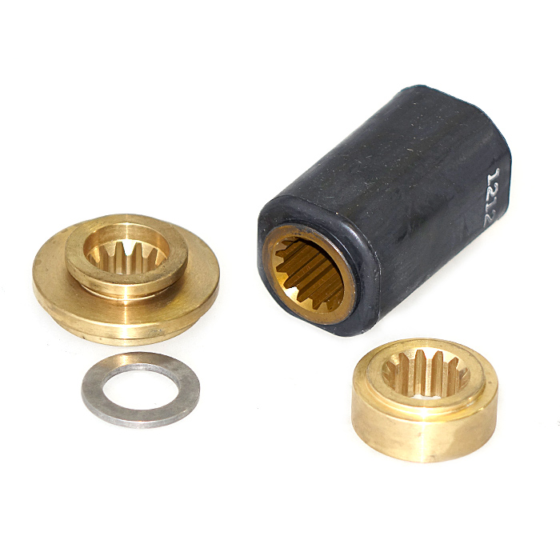

Прайс-лист (цены) на установочные комплекты для винтов Solas
Прайс-лист (цены) на установочные комплекты для винтов Solas
Установочные комплекты для винтов Solas
| Фото | Модель | Описание |
|---|---|---|
| UMC-KT | ||
| UME-KT | ||
| RBX-102 | Для моторов Force 75-150HP, 1995-present, 15 tooth spline Honda 75-90 HP,1995-1998, 15 tooth spline Mercury/Mariner/Mercruiser 60 HP Bigfoot, 15 tooth spline 70-140 HP (except 135 HP), 1961-present, XR-4, XR-6, 15 tooth 135 HP, 1987-present, 15 tooth spline 150-300 HP, 1978-present, 15 tooth spline Mercruiser Alpha One & Bravo One (less than 400HP), 15 tooth spline Yamaha 80-140 HP, 1978-1983, 15 tooth spline | |

|
RBX-103 | |
| RBX-104 | Для моторов Suzuki DT150-225 HP,1986-present, 2 stroke DF150-300 HP 15 tooth spline | |
| RBX-108 | Для моторов Yamaha T50, 1996-present, 15 tooth spline 60-100 HP, including 4-stroke, 1984-present, 15 tooth spline | |
| RBX-108 | Для моторов Yamaha T50, 1996-present, 15 tooth spline 60-100 HP, including 4-stroke, 1984-present, 15 tooth spline | |
| RBX-110 | Для моторов Evinrude/Johnson/BRP 60 & 70HP, (4-Stroke), 1998-present 13 tooth spline | |
| RBX-114 | Используется для моторов Mariner & Mercury Outboards: 30 HP 94 & Newer, 35 HP 84-89, Model 402-500 74-84, 13 spline propshaft Model 650 1972-76, Model 700 1977-84, 13 spline propshaft 40/50 HP (2&4 Stroke, not Bigfoot) 1977 & Newer, 13 spline propshaft 48 HP Mariner All Years, 13 spline propshaft 55 HP Seapro & Marathon 1995 & Newer, 13 spline propshaft 60 HP (not Bigfoot or Seapro) 1978 & Newer, 13 spline propshaft 60 HP Mariner 1976, 70 HP thru 1983, 13 spline propshaft Force Outboards: 40 & 50 HP 1995-98, 70 HP 1991-95, 75 HP 1996-98, 13 spline propshaft | |
| RBX-115 | Используется для моторов Suzuki Outboards: DT50, 50M 83-84, DT55 85-97, DT60 83-84, DT65 85-97, 13 spline propshaft | |
|  | RBX-117 | Используется для моторов Yamaha Outboards: F30 (4 stroke) 2001-05, 40 HP & 50 HP (not T50) 1984 & Newer, 13 spline propshaft 48 HP 1995 & Newer, 55 HP 1976-95, 13 spline propshaft F40(4 stroke) 1999 & Newer, F50 (4 stroke) 1995 & Newer, 13 spline propshaft 60 HP 1976-91, F60 (4 stroke) 1999 & Newer, 13 spline propshaft |

|
RBX-124 | |

|
RBX-125 | Для моторов Suzuki DF90, DF115 (4-Stroke), 2001-present, 15 tooth spline Evinrude/Johnson/BRP 90, 115 HP (4-Stroke), 2003-present, 15 tooth spline |
| RBX-126 | Для моторов Suzuki DF140 (4-Stroke), 2001-present, 15 tooth spline Evinrude/Johnson/BRP 140 HP (4-Stroke), 2003-present, 15 tooth spline | |
| RBX-127 | Используется для моторов Yamaha F350 (350 HP 4-stroke V8 engine) | |
| RBX-150 | Для моторов Suzuki DF70A, DF80A, DF90A (4-Stroke), 2009~ ,15 tooth spline | |
| RBX-203 | Для моторов Yamaha 115HP,FS115 (4stroke),and 130 HP, 1984-present, 15 tooth spline 150-300 HP, 1984-present, 15 tooth spline 225 EFI (4stroke) Sterndrives, 1989-1993, 15 tooth spline |
{kind=link}
{kind=link}
{kind=link}
{kind=link}
{kind=link}
{kind=link}
{kind=link}
{kind=link}
{kind=link}
{kind=link}
{kind=link}
{kind=link}
{kind=link}